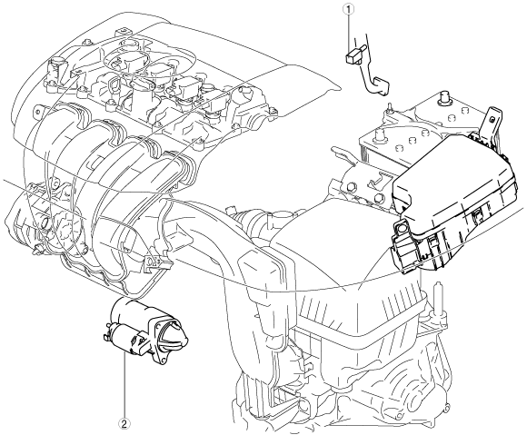

ภาพตำแหน่งระบบสตาร์ท [SKYACTIV-G 2.0, SKYACTIV-G 2.5]
id0119i2103700

ac5wzw00005119
1
สวิตช์อินเตอร์ล็อคมอเตอร์สตาร์ท (MTX)
(ดูที่
การตรวจสอบสวิตช์อินเตอร์ล็อคมอเตอร์สตาร์ท [SKYACTIV-G 2.0, SKYACTIV-G 2.5]
)
2
มอเตอร์สตาร์ท
(ดูที่
การถอด / การติดตั้งมอเตอร์สตาร์ท [SKYACTIV-G 2.0, SKYACTIV-G 2.5]
)
(ดูที่
การตรวจสอบมอเตอร์สตาร์ท [SKYACTIV-G 2.0, SKYACTIV-G 2.5]
)
(ดูที่
การถอดแยก / ประกอบมอเตอร์สตาร์ท [SKYACTIV-G 2.0, SKYACTIV-G 2.5]
)